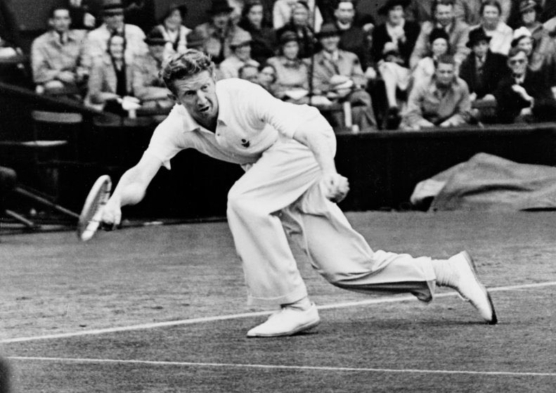
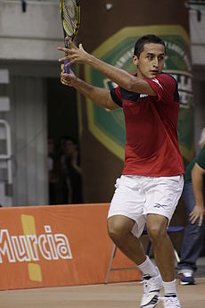
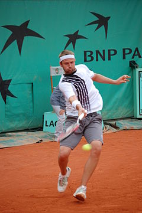

MEJORES JUGADORES DE TENIS
- Don Budge
Es un jugador estadounidense de origen escocés, que se convirtió en el primer propietario del Grand Slam en 1938. En total, Don Budge ganó seis torneos del Grand Slam: Wimbledon dos veces, doble US Open, el Abierto de Australia y el Abierto de Francia. Él sigue siendo el tenista más joven en obtener estos triunfos: a los 23 años ganó cuatro torneos principales. Los biógrafos señalan sus fuertes jugadas, en especial su potente saque cerrado.

- N.Almagro
nació el día 21 de agosto de 1985, en su carrera ha ganado 11 títulos ATP, su mejor participación en un Grand Slam ha sido llegar a los cuartos de final de Roland Garros en 2008 y 2010, perdiendo contra Rafa Nadal los dos años.Su mejor posición fue en 2011, era el número 9 del mundo.

- M. Fish
Mardy Fish (9 de diciembre de 1981) es un tenista profesional estadounidense, nacido en Edina, Minnesota. Fish logró la medalla de plata en los Juegos Olímpicos de Atenas 2004, cayendo en la final ante Nicolás Massú. También ha sido finalista en cuatro torneos Masters 1000. Actualmente es el N°1 de Estados Unidos.
